地政学
天津は北京に最も近い大港で、首都の物流、防衛、外交行事、産業補完を担う直轄市です。海河から渤海湾へ出る位置は、華北平原を海へ開き、京津冀協同発展の要となります。港と首都の距離が都市の重みです。要衝だ。

🇨🇳 中国 / 東アジア / World City Atlas
北京の海の玄関として渤海湾へ開き、海河の旧市街、租界建築、巨大港、濱海新区、製造業、庶民的な食文化が重なる中国北部の直轄市。
都市の骨格
天津は海河の河港から渤海湾の大港へ広がり、北京と華北平原を海へつなぎます。旧租界の街路、工業団地、濱海新区、大学、住宅地、食の市場が、川と鉄道と高速道路に沿って連続します。
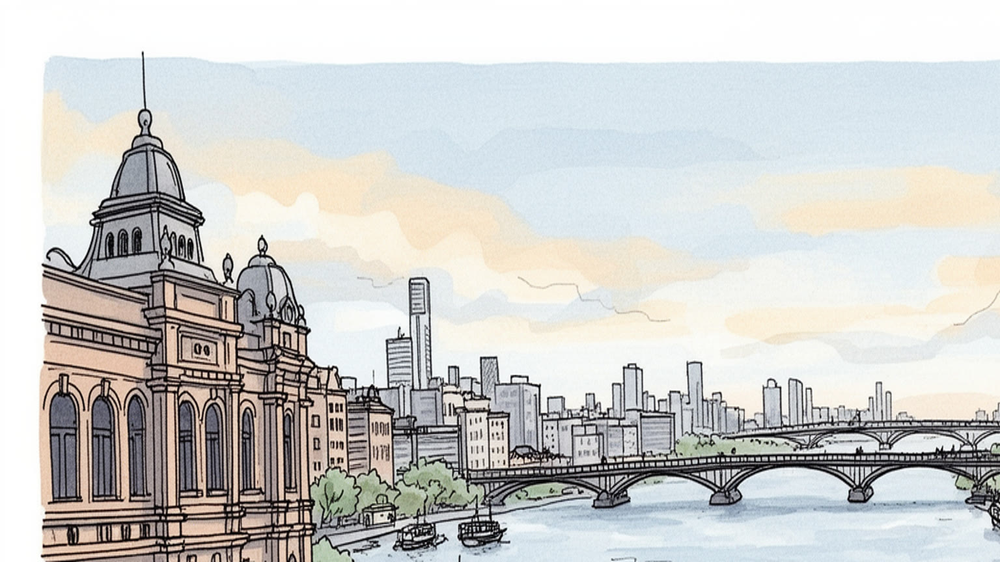
天津は北京に最も近い大港で、首都の物流、防衛、外交行事、産業補完を担う直轄市です。海河から渤海湾へ出る位置は、華北平原を海へ開き、京津冀協同発展の要となります。港と首都の距離が都市の重みです。要衝だ。
天津港、石油化学、航空、車両、機械、金融、物流、大学が雇用を作ります。工場技術者、港湾作業員、運転手、研究者、店員、清掃、配達の労働が都市を支え、国有企業と民間企業が近くで動きます。現場の技能も厚い。
相声、狗不理包子、煎餅果子、海河の夜景、媽祖信仰、寺院、教会、モスク、租界建築が天津の声を作ります。北京に近いが、言葉、笑い、食、港町の開放感には独自の気質があります。庶民文化が強い街です。今も濃い。
観光客は五大道、意式風情区、古文化街、天津之眼、海河クルーズを巡りますが、住民には通勤、住宅、老工業地の再生、冬の乾燥、夏の豪雨が身近です。名所と団地、港湾の生活が同居する都市です。課題も続く街です。
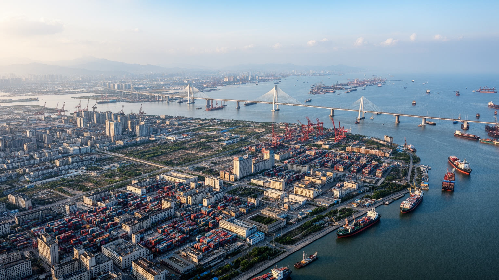
天津の地理は、海河の水辺と渤海湾の浅い海から読み始める必要があります。旧市街は北京から流れてくる水系と大運河の結節点に育ち、塩、穀物、軍需、商業を受け止める河港でした。近代以降は海へ向かう低地を埋め立て、港湾、工場、倉庫、鉄道、道路を伸ばし、濱海新区を含む二つの重心を持つ都市圏になりました。川沿いには橋、遊歩道、歴史建築、高層地区が連なり、海側にはコンテナターミナル、石化基地、保税区、物流団地が広がります。平坦な地形は建設を助ける一方、高潮、塩害、地盤沈下、豪雨時の排水を難しくします。天津の水辺は観光の夜景であると同時に、首都圏の貨物を動かし、工業用地を支え、洪水を逃がす実務の場所です。海河を歩く時、川面の美しさだけでなく、上流の都市化、地下水、港湾道路、埋立地の安全、漁業の変化まで同じ地図に置くと、天津の都市骨格が見えてきます。海へ近いことは開放性とリスクを同時に与え、内陸の北京とは違う時間感覚をこの街に刻んでいます。さらに、河口の湿地や塩田の記憶は、港湾開発の前から続く沿岸生活を伝えます。川を観光装置として磨くだけでなく、水をためる土地、風を通す空間、漁村や倉庫の記憶をどう残すかが、次の都市計画の質を左右します。水の管理は、産業の基盤であると同時に、市民が川辺を安心して使うための公共サービスでもあります。
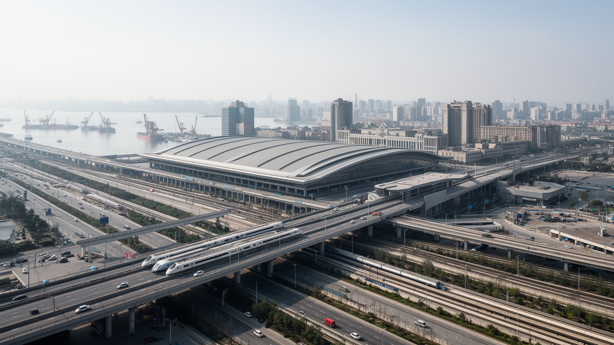
天津は単独の港湾都市であると同時に、北京の海の玄関でもあります。高速鉄道に乗れば北京中心部と短時間で結ばれ、官庁、企業本社、大学、研究機関、国際会議、外交行事、首都空港圏との関係が日常的に動きます。首都北京が政治と情報を集める一方、天津は港湾、倉庫、製造、化学、海運、保税区を通じて、首都圏の物的な入口を担います。京津冀協同発展は、北京の過密を抑え、河北の産業転換を進め、天津の港と研究機能を生かす構想ですが、実際には都市間の競争、財政、雇用、住宅、環境負荷の調整を必要とします。北京に近いことは機会である一方、天津の独自性を薄める圧力にもなります。若い人材や企業の意思決定が北京へ吸われれば、天津は外港と工場だけの都市に見えかねません。しかし、港、大学、租界遺産、食文化、相声の笑い、職人的な商いは、天津固有の厚みを保っています。首都を支える都市として読むだけでなく、北京とは別の気質を持つ海辺の直轄市として読むことで、天津の政治的な位置が立体的になります。この近さは災害対応や大型行事の警備にも表れ、港湾の安全、道路規制、鉄道輸送が首都機能と連動します。首都圏の裏方であるほど、天津の判断力と現場力は見えにくいが重要になります。通勤圏の拡大は家庭の選択肢を増やす一方、地域の雇用を弱くすれば若者の定着を難しくします。
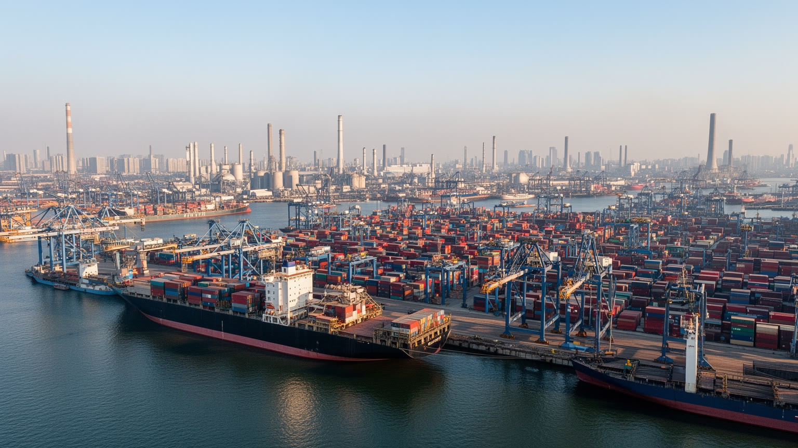
天津港は中国北部の重要な国際港で、コンテナ、自動車、鉱石、石油、化学品、穀物、機械を扱い、北京、河北、内モンゴル、さらに内陸の産業地帯を海へ結びます。港の周囲には保税区、物流センター、石油化学、造船・修理、冷蔵倉庫、通関、金融、保険、海事サービスが集まり、貨物の流れが都市の雇用と税収を支えます。港湾経済の現場では、荷役、トラック運転、倉庫管理、危険物管理、船舶代理、清掃、警備、整備、事務処理が細かく連動します。巨大なクレーンやコンテナだけを見ても、この産業の厚みは分かりません。天候、潮位、鉄道接続、道路渋滞、通関手続き、国際情勢、燃料価格が、港の時間を左右します。危険物を扱う都市として、環境管理と安全管理は信頼の土台でもあります。港湾再編や自動化は効率を上げる一方、労働者の技能転換と地域雇用の不安を生みます。天津の港を読むことは、首都圏の消費や産業が、どれほど海上物流に依存しているかを読むことです。港は市民の日常から離れて見えますが、食料、建材、車、エネルギー、通販の背後で、毎日都市生活を支えています。港の競争力は取扱量だけでなく、安全文化、労働者の教育、背後地への鉄道輸送、湾岸の環境回復にもかかっています。海へ開く都市ほど、見えない管理の質が信頼になります。港湾の効率は、都市全体の信用でもあります。
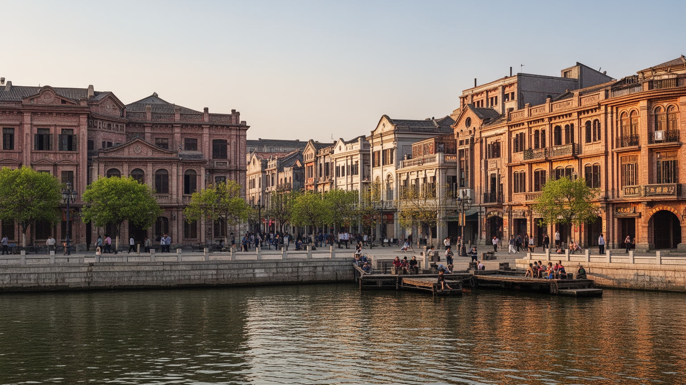
天津の都市景観を特徴づけるのが、五大道や意式風情区に残る租界期の建築です。洋館、銀行、教会、学校、庭園住宅、広い街路は、近代天津が国際商業、外交、金融、軍事の接点だったことを示します。しかし、その美しい外観は、列強の租界、治外法権、半植民地的な権力関係、商人と官僚の駆け引き、難民や亡命者の移動と切り離せません。現在の天津では、これらの建築がカフェ、博物館、ホテル、商店、散策路として再利用され、都市観光の重要な資源になっています。保存は単に古い建物を飾る作業ではありません。所有権、修復費、住民の移転、商業化、歴史説明の仕方が常に問われます。租界遺産を異国情緒だけで消費すると、近代中国が経験した不平等や、そこから生まれた都市文化の混合を見落とします。一方で、建物をすべて傷の記憶として閉じ込めても、天津の商業、教育、出版、演劇、食、言葉が受けた影響は読めません。天津の近代遺産は、外から来た力と地元の暮らしが衝突し、取り込み、作り替えられた複雑な都市記憶です。歩く価値は、写真映えする街並みの奥にある交渉の歴史を考える時に深まります。路地の生活音、門番の小屋、古い学校名、庭木の配置にも歴史は残ります。観光地として整えるほど、そこで暮らした人の時間をどう語るかが問われます。保存の言葉は、痛みと魅力を同時に扱う慎重さを要します。
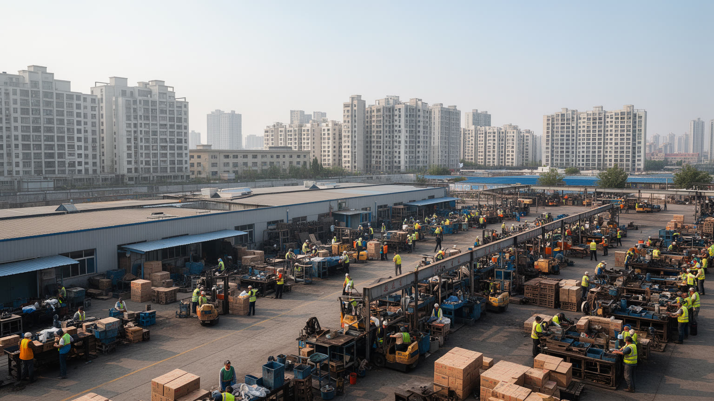
天津は港だけの都市ではなく、航空、車両、機械、電子、医薬、食品、石油化学、装備製造を抱える工業都市です。国有企業の歴史、外資系工場、研究機関、大学、職業教育、濱海新区の開発が重なり、熟練工、技術者、検査員、研究者、設備保守、営業、物流、食堂、警備、清掃まで多様な労働を生みます。北京に近い研究環境は人材確保に役立ちますが、意思決定や高付加価値部門が首都へ偏るリスクもあります。天津の製造業は、重厚長大の工業から、航空宇宙、電動車、バイオ医薬、スマート製造へ移ろうとしており、労働者には新しい技能が求められます。自動化や環境規制は安全と効率を高める一方、古い工場で働いてきた人の再訓練、賃金、雇用の安定を課題にします。工業団地の周辺には寮、集合住宅、食堂、学校、商店、病院が生まれ、工場のシフトが地域の日常時間を決めます。天津を理解するには、きれいな河畔や歴史建築だけでなく、早朝の通勤バス、港へ向かうトラック、試験室の白衣、機械音のある作業場を見る必要があります。都市の競争力は、数字上の投資額よりも、技能を育て直し、働く人が地域に暮らし続けられるかに表れます。家族を支える安定した賃金、職業学校の質、女性が働き続けられる勤務制度も、産業都市の基礎です。製造業の更新は、機械だけでなく生活の更新でもあります。
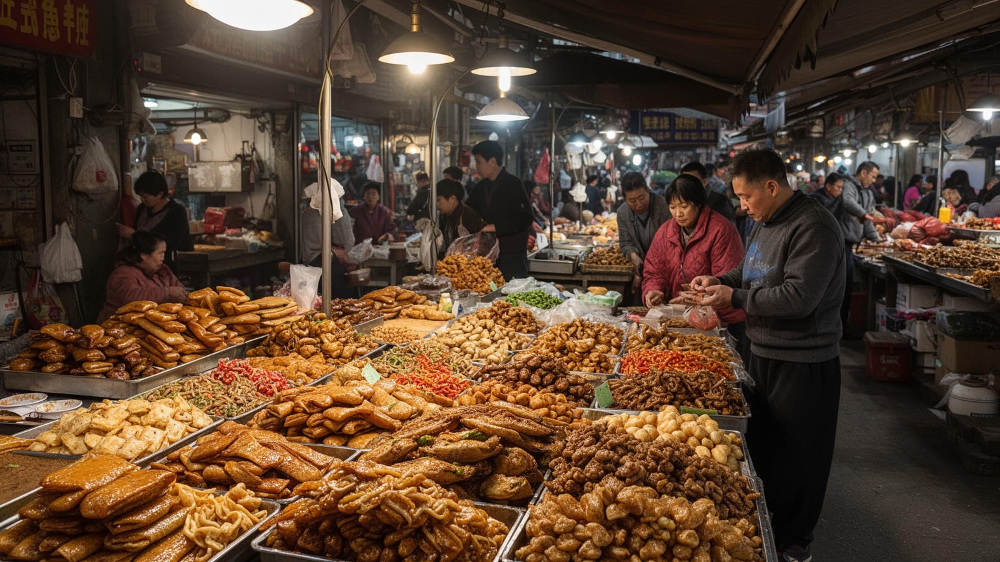
天津の生活感は、朝の煎餅果子、包子、麻花、露店、市場、茶館、相声の笑いに強く表れます。北京に近い大都市でありながら、天津には港町らしいくだけた気質と、言葉遊びを好む庶民文化が残ります。煎餅果子を焼く屋台、包子店の湯気、野菜市場の値段交渉、近所の高齢者の会話、夜の海河散歩は、都市の経済を家計の尺度で見せてくれます。相声は舞台芸であると同時に、都市の話し方、間合い、皮肉、親しみやすさを形にした文化です。食と笑いは観光の記号になりやすいですが、その背後には早朝から仕込み、油を管理し、店を掃除し、仕入れを交渉し、家賃を払う小商いの労働があります。再開発で古い市場や小さな劇場が減れば、街の記憶も薄くなります。一方で、衛生、交通、安全、若い世代の働き方に合わせて、屋台や商店も変わる必要があります。天津の食文化を読むことは、豪華な料理よりも、毎日安く早く食べられる場所が都市の安心をどう支えるかを見ることです。朝食の行列や劇場の笑いは、工場、港、学校、団地で働く人びとの時間をつなぎ、巨大都市を親しみやすい近所の集合として感じさせます。食堂の価格、朝の開店時間、近所の常連関係は、統計に出にくい生活保障です。庶民文化の強さは、都市が大きくなっても顔の見える場を保てるかにかかっています。小さな店を使う習慣は、街路の安全と近隣の記憶も支えます。
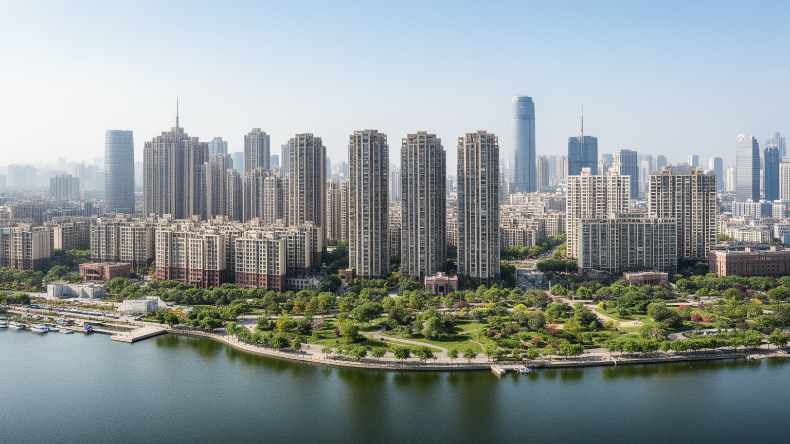
天津の住宅地は、海河沿いの古い街区、旧租界の低層住宅、計画的な団地、郊外の高層集合住宅、濱海新区の新市街まで大きく広がります。都市開発は住環境を改善し、地下鉄、道路、公園、商業施設、学校を増やしてきましたが、中心部の記憶を持つ路地や市場を消し、職場と住まいの距離を伸ばすこともあります。濱海新区は金融、港湾、産業、研究を集める未来都市として整備されましたが、広い道路と大きな区画は、歩いて生活する密度を作るまで時間がかかります。住民にとって大切なのは、外観の新しさだけではなく、通勤時間、学校、病院、買い物、日陰、公園、地域の顔見知りがあるかです。古い団地では高齢化、エレベーター不足、暖房、配管、駐車、介護が課題になり、新しい高層住宅では管理費、空室、遠い職場、子どもの通学が問題になります。天津の都市成長を読むには、開発区のスカイラインと、老街区の生活の細部を同時に見る必要があります。住宅は資産であると同時に、毎日の移動と近隣関係を決める基盤です。北京に近い首都圏の一部として住宅需要が動くため、天津の暮らしやすさは、雇用を市内に育て、公共交通で旧市街と新市街を無理なく結べるかに左右されます。再開発の成功は、古い住民を追い出さず、若い家族と高齢者が同じ地域で暮らせる余地を残すことでも測られます。
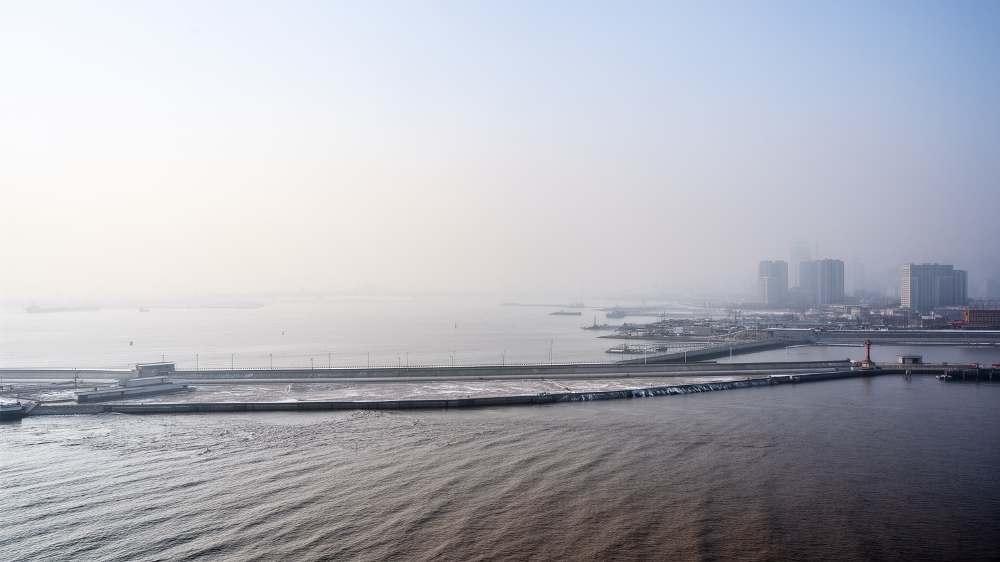
天津は温帯季節風気候の都市で、冬は寒く乾き、風と大気汚染が体感を重くし、夏は蒸し暑く、豪雨や雷雨が低地の排水能力を試します。渤海湾に近い平坦な土地では、高潮、海面上昇、塩害、地盤沈下、港湾施設の防災が大きな課題になります。かつての重工業と石炭利用は大気環境を悪化させましたが、産業転換、暖房の改善、排出規制、緑化によって都市の空気を変える努力が続きます。気候リスクは港や工場だけの問題ではありません。高齢者、屋外労働者、配達員、警備員、建設労働者、露店商は暑熱と寒風を直接受け、低地の団地や古い住宅は浸水や設備故障に弱い。大雨が降れば地下道、道路、地下鉄、物流、学校、病院への移動が止まり、港の操業にも影響します。天津の気候対策には、堤防やポンプだけでなく、湿地保全、雨水を受ける緑地、日陰、涼める公共施設、早期警報、労働時間の調整、古い住宅の改修が必要です。湾岸の成長は、水と空気の管理を都市競争力の中心に押し上げます。川沿いの美しい散歩道が安全であるためには、見えない排水路、上流の水管理、港湾の安全基準、地域の避難計画まで含めた設計が欠かせません。暖房期の空気、夏の熱中症、洪水後の衛生は、所得や住む場所によって負担が変わります。気候適応は環境政策であると同時に、生活の公平性を守る政策です。日々の備えが命を守ります。
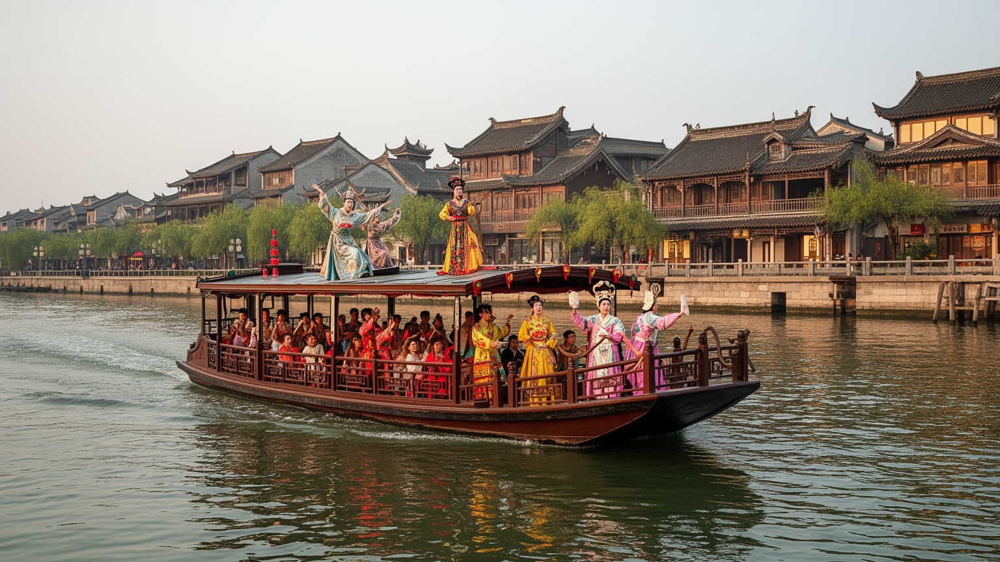
天津観光は、海河の橋と夜景、五大道の洋館、意式風情区、古文化街、天津之眼、瓷房子、博物館、茶館、食堂をつなぐことで、近代都市と庶民文化の両方を味わう旅になります。海河クルーズや河畔の散策は都市の入口として分かりやすく、橋ごとに違う景観が天津の水辺を印象づけます。五大道では租界期の住宅と街路樹が残り、古文化街では民間信仰、工芸、土産物、食が観光客を迎えます。ただし観光地として整えられた街並みは、生活の厚みを薄く見せることもあります。名所の背後には、古い住宅の維持、店主の家賃、住民の静かな暮らし、清掃、警備、ガイド、船員、飲食店の労働があります。天津の旅で大切なのは、北京からの日帰りで写真を撮るだけでなく、朝食の店、相声劇場、大学周辺、港に近い地区、団地の市場まで足を伸ばし、都市の時間の幅を見ることです。観光政策は、歴史建築を守りながら、商業化で同じような店ばかりにしない工夫を求められます。天津の魅力は、豪華さよりも、川沿いの開放感、近代の複雑な記憶、笑いと食の親しみやすさが同じ日に出会う点にあります。旅の質は、名所を消費する速度を少し落とすことで深まります。夜景の明るさだけでなく、朝の市場や昼の路地を歩くと、観光都市ではない天津の顔が見えます。住民の生活を尊重する歩き方が、遺産の価値も守ります。
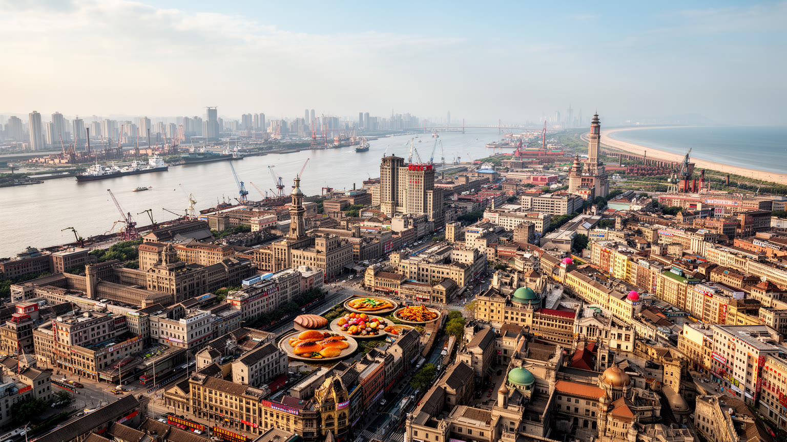
天津の重要性は、北京に近い港という一言では収まりません。海河の旧市街、渤海湾の大港、租界遺産、濱海新区、石化と装備製造、大学、相声、朝食文化、団地の暮らし、気候リスクが、一つの直轄市の内部で重なっています。北京が政治の中心として強い光を放つほど、天津はその影に入って見られがちですが、首都圏の物流、製造、港湾安全、海への開放性は天津なしに成立しません。同時に、天津は単なる補助都市でもありません。近代の国際接触を受け止めた街路、庶民的な笑いの文化、工場と港で働く人びとの技能、新旧住宅地の生活は、北京とは違う都市の人格を作ります。成長の課題も複雑です。港湾と化学産業の安全、老工業地の再生、濱海新区の密度、若者の雇用、住宅と通勤、冬の大気、夏の豪雨、歴史建築の商業化を同時に扱う必要があります。天津を世界都市として読むには、華やかな河畔や租界建築だけでなく、コンテナの流れ、工場のシフト、朝食の屋台、団地の高齢者、港湾労働者、大学生の移動を同じ地図に置くことが大切です。そこに、首都を支える湾岸都市でありながら、自分自身の記憶と生活を持つ天津の姿が立ち上がります。都市の価値は、北京との近さをどう使いながら、天津らしい働き方、笑い、食、川辺の公共空間をどう保つかで決まります。外港という役割と独自の生活文化を同時に読むことが、天津理解の入口です。